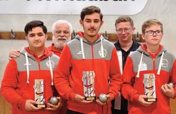
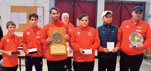

20 18 Associations ( ( ( 2026, les années se suivent et se ressemblent, avec encore des titres de champion du Tarn et Garonne. Après une ex- cellente saison 2025, 2026 démarre sur « les chapeaux de roues » : EN SENIORS, 6 titres de champion (sur 12 possibles) Et 3 de vice-champion départemental EN JEUNES, 9 titres de champion (sur 10 possibles) Et 6 de vice-champion départemental. Cette moisson de titre vient étoffer le tableau déjà bien garni depuis c’est 12 dernières années L’école de Pétanque : En juniors : - champion du Tarn et Garonne des clubs - champion du Tarn et Garonne triplette: photo - champion du Tarn et Ga- ronne doublette - champion du Tarn et Ga- ronne tir de précision - Vice-champion du Tarn et Garonne des clubs - Vice-champion du Tarn et Garonne triplette - Vice-champion du Tarn et Garonne doublette - Vice-champion du Tarn et Garonne tir de précision En cadets : photo - champion du Tarn et Garonne des clubs - champion du Tarn et Garonne triplette - champion du Tarn et Garonne doublette - Vice-champion du Tarn et Garonne doublette En minimes : champion du Tarn et Garonne triplette - champion du Tarn et Garonne doublette - Vice-champion du Tarn et Garonne des clubs Pétanque Montpezataise Pétanque Montpezataise Les Seniors - Champion du Tarn et Garonne doublette : BOULANGER Del- son et PRUDHOMME Sony, nos 2 vice-champion de France 2024 - Champion du Tarn et Garonne doublette �lles : BAPTISTE Fallone et CHARDELIN Kimberley (de retour au club après un passage de 2 ans en principauté de Monaco) - Champion du Tarn et Garonne doublette mixte : BAP- TISTE Fallone et PRUD’HOMME Sony - champion du Tarn et Garonne triplette mixte : ALBER- GUCCI Liliana FELTIN Georges et PRUDHOMME Sony - champion du Tarn et Garonne tête à tête masculin PRU- DHOMME Sony - champion du Tarn et Garonne provençal triplettes : NA- VARRO Yohan (enfant du village, vice-champion de France provençal 2024) ; SAMARA Jacques et son �ls DYLAN (a dé- buté au club en minimes, a participé en jeune à plusieurs ch.de France) - Et 3 titres de vice-champion en tête à tête, en doublette mixte et en doublette masculin Après ces 5 premiers mois de bon et dur labeur, on espère que pour le 2 e semestre quelques titres de champion d’Oc- citanie et pourquoi pas en�n après 2 arrêts devant la der- nières marche au championnat de France, nos seniors vont accrocher un titre de champion de France qui vien- drait rejoindre les 2 déjà conquis en catégorie jeunes Manifestations 2025 Au Faillal : Championnat des clubs régional seniors le 18 octobre, opposant 8 clubs parmi les meilleurs des dépar- tements d’Occitanie. Vide grenier Boulevard des fossés, place du Réduch et ave- nue des écoles, le 19 juillet et le 09 Août. Remerciement Merci à tous, élus, sponsors, bénévoles et Montpezatais qui nous soutiennent. Grâce à eux, la Pétanque continuera de bien repré- senter le village au delà du département et même de la région. Notre Magasin : Nous vous accueillons au caveau du lundi au sa- medi, de 9h à 12h et de 14h à 18h. Dégustation sans rendez-vous (pour les groupes, nous prévenir à l’avance). Visites du chai sur rendez-vous. NOS RENDEZ�VOUS : Fête du samedi 6 juin 2026 : Portes ouvertes dès 9h00. Dégustation et 15% de promotion dès le premier carton acheté repas champêtre et concert ! Fête du samedi 12 décembre 2026 • Portes ouvertes dès 9h00. Dégustation et 15% de promotion dès le premier carton acheté • Soirée tapas et concert gratuit ! Et d’autres dates à venir ! Vignerons du Quercy